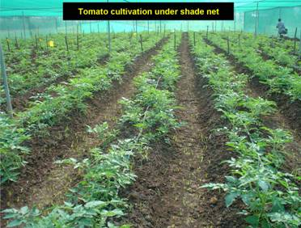

HORT 281 :: Lecture 02 :: VEGETABLE GARDENS

vegetable gardens
Kitchen garden or nutrition garden
Kitchen garden or home garden or nutrition garden is primarily intended for continuous supply of fresh vegetables for family use. A number of vegetables are grown in available land for getting a variety of vegetables. Family members do most of works. Area of garden, lay out, crops selected etc. depend on availability and nature of land. In rural area, land will not be a limiting factor and scientifically laid out garden can be established. In urban areas, land is a limiting factor and very often crops are raised in limited available area or in terraces of buildings. Cultivation of crops in pots or in cement bags is also feasible in cities.
The unique advantages of a kitchen garden or home garden are :
- Supply fresh fruits and vegetables high in nutritive value
- Supply fruits and vegetables free from toxic chemicals
- Help to save expenditure on purchase of vegetables and economize therapy
- Induces children on awareness of dignity of labour
- Vegetables harvested from home garden taste better than those purchased from market.
Sites selection and size
Choice for selection of site for a kitchen garden is limited due to shortage of land in homestead. Usually a kitchen garden is established in backyard of house, near water source in an open area receiving plenty of sunlight.
Size and shape of vegetable garden depends on availability of land, number of persons in family and spare time available for its care. Nearly five cents of land (200 M2) is sufficient to provide vegetables throughout year for a family consisting of five members. A rectangular garden is preferred to a square plot or a long strip of land.
Layout
Layout of garden and selection of crops suited to each season depends on agro-climatic conditions prevailing in the area. Depending on climatic and seasonal changes, modifications are to be done in layout and crop allotment. General features / principles to be followed in the layout are follows :
- Perennial vegetables like drumstick, curry leaf and bilimbi should be allotted to one side of the garden so that they may neither shade remaining plants nor they interfere with intercultural operations. Shade loving vegetables like water leaf may be planted in perennial plot. One or two compost pits may be provided on one corner of kitchen garden for effective utilization of farm / kitchen waste.
- Fences on all sides should be made with barbed wire or with live stakes. Fencing on four sides may be planting chekkurmanis, ivy gourd, dolichos bean, trailing cowpea and ridge gourd. Fence may be made strong by planting agathi (Sesbania grandiflora) at 1.0 m. distance along the fence. An arch made of red or green Basella may be erected at entry point or gate of kitchen garden.
- After allotting areas for perennial crops, remaining portion is divided into 6-10 equal plots for raising annual vegetable crops. By following scientific crop rotation, three annual crops can be raised in the same plot. Companion cropping or accession cropping, inter cropping and mixed cropping can be followed for effective utilization of space.
- Provide walking path at centre as well as along four sides. Path can be made attractive by planting red and green amaranth or indeterminate tomato on either side.
- Utilize ridges, which separate individual plots for growing root and tuber crops.
- As intensive and continuous cropping is done in a kitchen garden, fertility and texture of soil may be maintained by applying adequate quantities of organic manure frequently. Organic farming should be given thrust for a kitchen or home garden. However, in order to harvest good crop, chemical fertilizers are also essential.
- Since fresh vegetables are directly utilized, follow clean cultivation, mechanical removal of pest / disease affected plants, planting of resistant varieties, biological control, use of bio-pesticides or bio-fungicides for pest and disease control in a kitchen garden.
- In a kitchen garden, preference should be given to long duration and steady yielding varieties than high yielding ones, which require constant care.
- Crop arrangement : While allotting or arranging crops in each sub-plot, care should be taken to plant varieties / crops at ideal time of planting or season. Principles of crop rotation also should be followed in continuous cropping.
- A bee-hive may be provided for ensuring adequate pollination of crops besides obtaining honey.
- A cropping pattern for a model kitchen garden in the warm humid tropical condition of Kerala is furnished below. However, choice of the crop depends on the likes and dislikes of family members.
Cropping pattern in a kitchen garden
Plots |
May-June to |
September – October to December-January |
December-January to May-June |
|
Annual crops |
||||
(a) Bitter gourd |
Yard long bean |
Snake gourd |
||
(b) Brinjal and chilli |
Contd. |
Okra |
||
(c) Ash gourd |
Pumpkin |
Amaranth |
||
(d) Bushy / semi-trailing cowpea |
Tomato |
Cucumber / OP melon |
||
(e) Okra |
Ash gourd |
Chilli / brinjal |
||
(f) Pumpkin |
Okra |
Yard long bean |
||
Perennial crops |
||||
(a) Vegetables |
Drumstick, curly leaf, bilimbi, culinary banana. |
|||
(b) Fruits |
Banana, acid lime, Malta lemon, papaya, West Indian cherry, guava, rose apple etc. |
|||
Inter-crops in perennial plots |
||||
(a) Fruits |
Pineapple |
|||
(b) Vegetables |
Taro, elephant foot yam, yams, Chinese potato, tapioca water leaf. |
|||
(c) Spices |
Perennial chilli, ginger, turmeric, mango ginger |
|||
Border of walking paths |
Amaranth, bush cowpea, bush dolichos bean |
|||
Fence |
||||
Perennials |
Chekkurmanis, Ivy gourd, agathi, giant granadilla |
|||
Rainy season |
Sword bean, clove bean |
|||
Winter season |
Ridge gourd, yard long bean |
|||
Rainy to summer |
Dolichos bean, winged bean |
|||
Market garden
Market gardens are established within 15-20 km of city to supply fresh vegetables to nearby local market. Cropping pattern in a market garden depends on demands of local market. Mostly high value crops, early varieties and varieties or crops which do not stand long distance transport (amaranth, yard long bean, bitter gourd etc.) are grown on an extensive manner in market garden. High cost of land and labour is compensated by high price of produce, low transport cost and availability of municipal compost. Due to increasing cost and pressure on land near big cities and fast developing transportation facilities, market vegetable gardens in big cities are on verge of extinction.
Truck garden
Truck gardens are usually established in rural areas for supplying a few vegetable crops to a distant market. Here cultivation of a few specialized crops is done on an extensive scale in large area under ideal soil and climatic conditions. Relatively cheap labour and land, mechanical cultivation and high yield result in low production cost in a truck garden. However, involvement of middlemen in marketing and cost of transportation reduce net income.
Vegetable garden for processing
Vegetables like tomato, peas, potato, sprouting broccoli, spinach, lima bean, gherkin and onion are utilized by processing industries for canning, dehydration, freezing, pickling and for making other processed products in developed countries. For regular supply of specialized varieties and crops to processing industries, vegetable gardens are established near processing factories. In India, this type of gardens is found in Punjab and a few other states for supplying tomato for processing industries. Varieties meeting processing requirements only are cultivated here and supply of seeds for sowing, cultivation practices and supply of vegetables to processing industry are mostly based on some agreement between factory owners and farmers.
Vegetable garden for seed production
Annual seed requirement of major vegetables in India is around 51,000 tonnes. Major share of requirement is met with home saved seeds of farmers. With advancement of technologies, especially development of improved varieties and hybrids, seed production has become a specialized job requiring great expertise.
Vegetables for seed production are grown in idea soil, climate and disease-free conditions. Each crop / variety is grown in specified isolation distance meeting all the field and crop standards. Timely inspection and rouging are also done to maintain seed purity. Handling of seed crop curing, threshing, cleaning, package and storage are specialized jobs requiring thorough knowledge. Since pests and diseases affect seed field more than that of vegetable field, timely crop protection measures are to be taken, especially for control of seed borne diseases.
Special Systems of Vegetable Farming
Vegetables are cultivated during specific seasons in areas where soil and climatic conditions are ideal and water is available in plenty. It is also grown as rainfed crop depending on receipt of rain. Specific regions and villages scattered throughout the country are famous for cultivation of specific vegetables. To meet increasing demand of vegetables cultivation is also undertaken in adverse climatic conditions by adjusting time of planting or creating favourable situations for growth of plants under natural conditions or by constructing temporary or permanent structures.
Special systems of cultivation followed in India are :
- Cultivation in protected structures like glass houses, poly houses, rain shelters etc.
- Hydroponics
- Floating type of cultivation
- River bed cultivation
- Organic farming
Cultivation in protected structures
In developed countries, vegetables are grown under protected structures like green houses to tide over unfavourable weather conditions like extremely low temperature, snow fall during winter and frequent rains during summer. Green houses are framed or inflated structures covered with transparent or translucent materials, large enough to grow crops under partial or fully controlled environmental conditions, to get optimum growth and productivity. They allow solar radiation to pass through it but traps the long wave thermal radiation emitted from inside and increases inside-temperature by 10-12oC. This “green house effect” helps for vegetable forcing in cold climate. Evaporation from soil and plants also raise humidity inside. Carbon dioxide released by plants inside increases rate of photosynthesis during daytime. Optimum CO2 concentration in a green house atmosphere is between 700-900 ppm. CO2 enrichment to 1200 ppm increases photosynthesis Hence, CO2 is supplemented in green house through natural CO2 generators kept in green house or directed through pipes or by use of liquid CO2.
A comparison of productivity of different vegetables under open and green house conditions furnished in ‘table 1 is self-explanatory. In addition to manifold increase in productivity, green house cultivation also results in long fruiting span, high quality and less incidence of pests and diseases.
Table 1 : Productivity of vegetables in green houses and in open field
Crops |
Average vegetables yield (t/ha) |
|
India |
The Netherlands |
|
Tomato |
10 |
200 |
Cucumber |
20 |
200 |
Pepper |
12 |
150 |
Brinjal |
25 |
200 |
Depending on cladding material used, the structures are called as glass houses or poly houses.
Glass house
Roof and all the four sides of glass houses are covered with glass sheets. Green house effect increases temperature inside glass houses. Most of the glass houses are provided with heating systems. During summer, cooling devices are also provided. Temperature, humidity, light and carbon dioxide are also controlled through computerized micro processor system for providing ideal conditions. CO2 enrichment is done inside the glass house for increasing yield. High value and highly productive crops like tomato, capsicum, cucumber, musk melon, water melon and spinach are grown in high-tech glass houses in developed countries like USA, UK, West Germany USSR, Japan, Spain, Italy, Rumania, Bulgaria etc. Trailing cucurbits like cucumber and muskmelon are pruned to encourage vertical growth and are trained to different systems like arch way system, inclined cordon system or vertical cordon system. In tomato, mostly indeterminate F1 hybrids are trained to vertical poles. Plants are fed with optimum amount of nutrients through drip irrigation and foliar spray. The high initial outlay for erection of glass houses and for providing glass house environment is compensated by long duration, prolonged harvesting periods, high yield and good quality.
Poly-house
Recent advancements in petrochemicals and plastics led to replacement of costly glass houses to less costlier poly-houses for growing vegetables. In developed countries like Japan, Spain, Italy, Holland, Israel and UK poly-houses are utilized for commercial production of vegetables under adverse climatic conditions. In Japan, 84% of area under poly-houses is utilized for vegetable cultivation. In India, poly-house technique has made it possible to cultivate crops like cabbage, cauliflower, knol khol, tomato, onion, spinach and fenugreek throughout the year. Due to encouragement by the Government, area under poly-houses in India was increased from a mere 5 ha in 1983 to more than 2000 ha. during 2006. Poly-houses in the country are mostly located in Bangalore, Pune, Delhi, Hyderabad and Uttaranchal. At present, poly-houses are mainly utilized for nursery raising of vegetable crops, hybrid seed production and off-season cultivation of high value vegetable crops like tomato, capsicum and cucumber in metropolitan cities.
Poly-houses are large structures made of aluminium or galvanized iron or locally available wooden materials using ultraviolet stabilized low density polythene or transparent plastic film as cladding materials for growing plants under controlled or partially controlled environment. Based on climate control devices and materials used, poly-houses are classified into low cost, medium cost and high cost poly-houses.
Low cost poly-house
Low cost poly-houses are not provided with any climate control device. This is a zero-energy chamber made of 700 gauge polythene sheet supported on bamboo or locally available materials. During winter of mild sub-tropics poly-houses are completely closed at night and as a result temperature inside would be 5-10oC more than outside. During daytime, poly-houses are kept open to allow natural ventilation. During summer, temperature inside the poly-houses are reduced by providing shade nets, frequent watering and by opening the walls.
Medium cost poly-house
In medium cost poly-houses, all four sides are completely covered and temperature inside is controlled by providing. “Fan and pad cooling system”, shade nets and micro-sprinklers. During winter, hot air blowers are necessary to maintain higher temperature. It has a single layer covering of ultraviolet stabilized polythene of 800 gauge thickness on G1 pipes of 15 mm bore.
High cost poly-houses
It is provided with fibreglass covering with full climate control devices. Temperature, humidity, light, day length and winds are automatically controlled using computers. Sensors and data loggers are provided in glass house to detect variation and to record climatic factors. High-tech structures are also provided with fully automatic fertigation system, sprinklers, misting system and fumigation devices.
Approximate cost estimated for one square meter in low, medium and high cost structures were Rs.125-500, Rs.500-1,000 and Rs.1,000 and above respectively. However, due to escalation in prices of component parts cost of various structures were increased considerably.
Depending on shape of roof, poly houses are of Lean type, Even-span or Gable type, Uneven span type, Ridges and furrows type, Saw-tooth type or Quonset type.
Poly-houses are mostly of Quonset types in which roof is semi-round. Pipe arches or trusses are supported by pipe pure lines running along green houses and are covered by UV stabilized polyethylene sheets. The ideal size of a structure is 30-37.5 m in length, 9.0 m width, 2.5 m and 3.5-4.5 m height at the sides and centre
Even-span type is with roof slopes of equal width slanting uniformly to either side. This is mostly constructed at level lands and its height is 2.5-2.75 m at sides and 3.75-4.25 m at centre. Ideal size with fibre glass covering is 9 m width and 30-37.5 length.

Rain Shelters
This is naturally ventilated low cost green house to protect plants from direct rain. Rain shelters are the most suited protection structures in high rainfall states like Assam and Kerala. It is provided with roof claddings of UV stabilized low density poly-ethylene film and sides are fully open. Mostly even span structure is used for construction of rain shelters.
Major bottle-neck of protected cultivation in glass / poly houses is the high initial investment. Nearly 50% of cost in protected cultivation is for structure alone. Maintenance cost of fully automatic structures also will be very high. Continuous cultivation of crops in one and same site depletes the soil and needs replenishment frequently. Sufficient care also should be taken to avoid incidence of pests and diseases in protected structures.
Trench cultivation
Vegetable cultivation is impossible at sub-zero winter temperature of high altitude places. Trench cultivation, otherwise called as underground green house technology, is a simple and economically viable technology for growing vegetables during winter. This technology is being utilized by farmers of Ladak and Leh regions of Himachal Pradesh and Jammu and Kashmir for extending vegetable production from three to eight months.
For making underground green house, a trench of 10 m length, 3.3 m width and 1.25 m depth is made. After digging, it should be filled by fertile surface soil up to a height of 30 cm. To avoid crumbling of walls, the trench can be constructed with help of stone masonry. Wooden poles are used to hold polythene sheets over trench. Vegetables like beet leaf, spinach, vegetable mustard, fenugreek, Swiss chard, Chinese cabbage, celery, parsley, coriander and mint are the most suited crop for cultivation. Crops utilize subsoil temperature, which is higher than prevailing atmospheric temperature.
Tunnels
Tunnel is used for initiating early germination of different summer crops like cucurbits. During rainy season also, a plastic tunnel can be provided to protect mid-season varieties of cucumber raised in nursery against rains. Plastic tunnels are extensively used in cold desert of Ladakh for raising vegetable nursery and to obtain early crops. In tunnels, environment is made congenial for growth of plants when atmosphere is unfavourable. Plastic tunnels are made using UV stabilized corrugated or plain fibre reinforced plastic sheets using metallic wire or frames to provide support to film in tunnel shape.
Hot beds and Cold frames
Structures like hot beds and cold frames are used for growing vegetables in winter. These beds provide an early start for crops like tomato, cucumber, okra, pepper, cabbage, muskmelon and watermelon. Hot frame can be made of wood, cement or brick stone and is prepared above ground. The pit is filled with a mixture of well rotten farmyard manure, ash and soil. Artificial heating is employed.
Cold frames are similar to hot beds except for absence of any form of artificial heat. Cold frames are wooden or concrete structures with plastic on top, which trap heat from sun, making temperature several degrees higher.
Hydroponics
Hydroponics is the technique of growing crops in soil-less media using nutrient solutions. It provides a method of growing plants in areas where soil is lacking or soil is present but contaminated with disease causing organisms or toxic substances. This technology is suited for growing high value vegetables like tomato, capsicum, lettuce, water melon, musk melon etc. Here roots of plants are floated in nutrient solution provided with circulating air or bubbling air. The plants are kept in proper position with supports.
The Defense Research Laboratory, Haldwani in Uttaranchal made extensive works on hydroponics and has suggested the following model for a hydroponics system.
The basic components of hydroponics are :
- Shallow fibre glass trays / plastic trays (60 cm length x 40 cm width x 12.5 cm depth) in which plants are grown.
- A collection tank / nutrient solution storage tank.
- A pump which circulates the nutrient solution from reservoir to growing trays through polyethylene tubes.
- A sequential timer to control operation of pump.
- An aerator connected to reservoir through polyethylene tube, to aerate nutrient solution to maintain oxygen level in nutrient solution.
Seedlings are planted on trays covered with thermocol sheets which provide support to young plants and keep roots of plants and nutrient solution in darkness. A uniform slope is maintained in trays for free flow of nutrient solutions and to avoid water stagnation in trays. For proper growth, plants must be supplied with all nutrients. To prepare nutrient solution, various fertilizers are mixed in a particular proportion and dissolved in water as per the following table.
Table : Nutrient / Salt their concentration in a hydroponics system :
Salt to be used |
Element |
Form in which they are available to plants |
Concentration (ppm) |
Ca(NO3)2 |
Nitrate N and |
NO3 |
900-930 |
KH2PO4 |
Phosphorus (P) |
HPO4 |
90-97 |
KNO3 |
Potassium (K) & N |
K |
234-250 |
MgSO4 |
Magnesium(Mg)&(S) |
Mg’’ |
49-52 |
MnC12 |
Manganese (Mn) |
Mn’ |
0.02 |
CuSO4 |
Copper (Cu) |
Cu’’ |
0.03 |
ZnSO4 |
Zinc (Zn) |
Zn’’ |
0.06 |
H3BO3 |
Boron (B) |
B |
0.60 |
H3(MO3)2O3 |
Molybdenum (Mo) |
Mo |
0.02 |
Ferric citrate |
Iron (Fe) |
Fe’’’ |
8.00 |
Notes 1. The micronutrient stock solution be made separately
2. The ferric citrate solution to be made separately
3. The Ca(NO3)2’ KH2PO4’ KNO3 and MgSO4 to be dissolved separately and
added one by one.
Cultivation of vegetables in floating bases in lakes
In Dal lakes of Kashmir, vegetables are cultivated in floating bases made up of roots of Typha grass growing wild in the lakes. The base is first prepared by weaving of roots of Typha grass. Then fertile soil rich in humus is placed on the grass base and seeds are sown. All the intercultural operations including watering are done with the help of boats. The floating garden can be dragged to different places for specific purposes. Most of the summer vegetables supplied to Srinagar are from these floating gardens.
Cultivation of vegetables in river bed
Growing of cucurbits in river beds or river basins constitute a distinct type of farming. These areas are called “diara lands” in UP and Bihar. In river beds of Jamuna, Ganga, Goamti, Sarayu and other tributaries in Haryana, UP and Bihar and other rivers in the remaining states, cucurbits like bottle gourd, ash gourd, parval, pumpkin and melona are commonly grown. It is a type of vegetable forcing during winter from November-February in North India. In Kerala, fertile basins of rivers Pamba and Manimala are utilized for growing crops like yard long bean, bitter gourd and snake gourd. Cucurbits like ash gourd, pumpkin, bottle gourd and water melon are cultivated during summer season in river beds of Bharathapuzha in Kerala.
River beds are formed by alluvian and diluvian action of rivers and due to inundation caused by swollen river during South West monsoon. Fresh silt and clay deposited every year during monsoon months make the land suitable, for growing vegetables literally on sand. Even though upper layer of sand seems unsuitable for cultivation, subterranean moisture seeped from adjacent river streams, makes it possible to grow early crops. Cucurbits are adapted to this situation due to long tap root system.
The system consists of identification of areas where there is silt deposit and water level is around 2.0 m below. After identifying the areas, trenches at 2.0-3.0 m spacing or pits at 4.0 m distance are dug after cessation of South West monsoon, late in October. Making pits in sand is a skilled work. Individual pits of 1.0 m diameter are taken to a depth of 1.0-1.5 m. After removing top layer of sand, lower silt is dug and raised almost ¾ height of the pit. Finally it takes the shape of a pillar inside the pit surrounded by sand on all sides. A handful of assorted seeds are sown on this silt. Most cucurbits are grown in November-December. Before sowing, trenches are manured with farmyard manure / cakes or other decomposed wastes. Since winter temperature in North India falls down to 1-2oC, protection is done by planting grass stubbles (Saccharum spp.). It has the following uses :
- Checks sand drifting on the dug up trenches and covering the hills sown with seeds.
- Provides partial protection from chilling winds.
- The grass is available for spreading over the sand when the vines grow and cover the sand.
- Prevent the sand being blown off with vines, especially when too hot summer winds sweep the areas in May.
Due to prevalent low temperature, sprouted seeds are sown in trenches / pits during November – December and mixed cropping of several cucurbits like musk melon, water melon, pumpkin, bottle gourd, ridge and smooth gourds are practiced. Sometimes seedlings get covered with drifting sand due to wind. This has to be exposed from sand in all days. In Bihar pointed gourd (parval) is also grown wherein the rooted cuttings are planted. Plants are pot watered initially until the roots touch the water regime down below.
Channel irrigation starts when plant start vining. Small ponds or wells are dug in river and water is drawn using picota or by using kerosene or diesel engines. For preventing seepage of water, mud is mixed with water in main channel. This mud plasters the channel through which water flows to pits without much seepage loss. Irrigation is done once in 2 or 4 days. In some parts, young seedlings are also transplanted. Since the silt soil is rich in humus, carried from the forests, fertilizer application was not essential during earlier periods. Due to depletion of soil fertility, fertilizer application has become necessary in several sites and the top dressing is done twice, 20-25 days after sowing and alter. Fertilizers are applied away from the plants in shallow side trenches. When it starts vining, trenches are leveled, stubbles are spread in the inter-spaces for spreading plants on sand. In years of un-seasonal rainfall or floods in river, the crops may get lost and re-sowing has to be done.River bed system is developed through native ingenuity of farmers. The home saved seeds are used for cultivation. Yield is variable, depending on location. Since only a single crop is taken in a year, pest and disease incidence is comparatively less in river bed system of cultivation.
Organic farming
The basic principles to be followed in organic farming are:
- Cultivate crops in the ideal cropping season: The ideal time of sowing for each vegetable crop is standardized for different agro-climatic zones. However, minor alterations are to be made to suit to specific localities.
- Avoid off-season cultivation of vegetables in traditional growing areas since it may result in heavy incidence of pests and diseases.
- Cultivate varieties already acclimatized in the locality. Priority should be given to medium yielding varieties tolerant to pests and diseases rather than high yielding varieties.
- Select pest and diseases resistant varieties in areas and seasons when severe incidence of pests or diseases are expected.
- Follow scientific crop rotation practices regularly in vegetable cultivation.
- Raise a leguminous crop and plough back to soil at its pre flowering stage before cultivating a heavy feeding vegetable crop in particular site.
- Practice shifting type of cultivation and keep land fallow at least one season in a year.
- Plough back all the crop residues to the soil whenever a crop is over.
- Practice composting regularly for converting biodegradable wastes to organic manures. Fungi like Pleurotus sp., and earthworms (Eudrillus eugineae) can be effectively utilized for making compost at a faster rate and for making it nutrient rich.
- Locally available organic materials like farmyard manure, poultry manure, goat manure, green leaves, organic cakes, fish meal, bone meal, etc. may be given priority for use in the organic farming. Apply farmyard manure or compost as basal dose and organic concentrates like organic cakes, poultry manure, vermin-compost etc. as top dressing.
- Use weeds as mulches or cover it with soil for converting to organic matter.
- In organic farming, native strains of bio-fertilizers like Rhizobium, Azotobacter, blue green algae, azolla, phosphate solubilizing bacteria and fungi, mycorrhizal fungi, etc. may be utilized for fixing nitrogen and increasing availability of phosphorus to plants. The enzymes and hormones produced by microorganisms also impart favourable effects on growth and productivity of crops.
- Burning pits before sowing or practice solarisation to control soil borne pests and diseases.
- Remove alternate hosts of pests and diseases and follow eco-friendly pests and disease control measures like cutting and removal of pests and diseased plants or plant parts, trap cropping, use of colour, sticky and other traps for attracting and killing insects.
- Promote biological control of pests and diseases by promoting parasites and predators.
- Home made insecticides like neem oil – garlic mixture, neem kernel suspension, tobacco decoction, etc. have wide use for control of pests and diseases in organic farming of vegetables. Plants like Andrographis sp., Clerodendron, Eucalyptus etc. also have values in pest control.
- Micro organisms like viruses, fungi, bacteria etc. Are currently utilized in pest control under organic farming. Nuclear polyhedrosis viruses (NPV) for control of Heliothis armigera, bacteria like Pseudomonas fluorescens against diseases incited by Phytophthora, Pythium, Rhizoctonia, Fusarium, Colletotrichum, Rolstonia, and Xanthomonas; Bacillus thuringiensis for control of insect pests Plutella sp., Heliocoverpa sp., Earias sp. etc.; fungi like Fusarium pallidoroseum for control of aphids are useful in organic farming. Fungal antagonists like Trichoderma sp. For control of soil borne diseases caused by Pythium and Phytophthora, and Pseudomonas fluorescens for control of specific fungal, bacterial and viral diseases are also effective.
- Insects like Trichogramma brasiliensis, T. chelonis and Chrysoperla carnea can also be utilized in eco-friendly pest control in vegetables.
Cultivators also should lead a life in tune with nature to produce pesticide free vegetables and to practice a farming system, which is eco-friendly and sustainable.
*******
1. Nutrition garden is otherwise called as
a. market garden b. vegetable forcing
c. kitchen garden d. Protected structure
2. River bed cultivation is related
a. solanaceous vegetables b. cucurbits c. cole crops d. bhendi
3. Floating garden
a. Punjab b. Kashmir c. Delhi d. Bangalore
4. Soil less culture
a. poly house b. rain shelters c. low tunnels d. hydroponics
5. Underground green house technology
a. rain shelters b. trench cultivation
c. floating garden d. hot beds
| Download this lecture as PDF here |